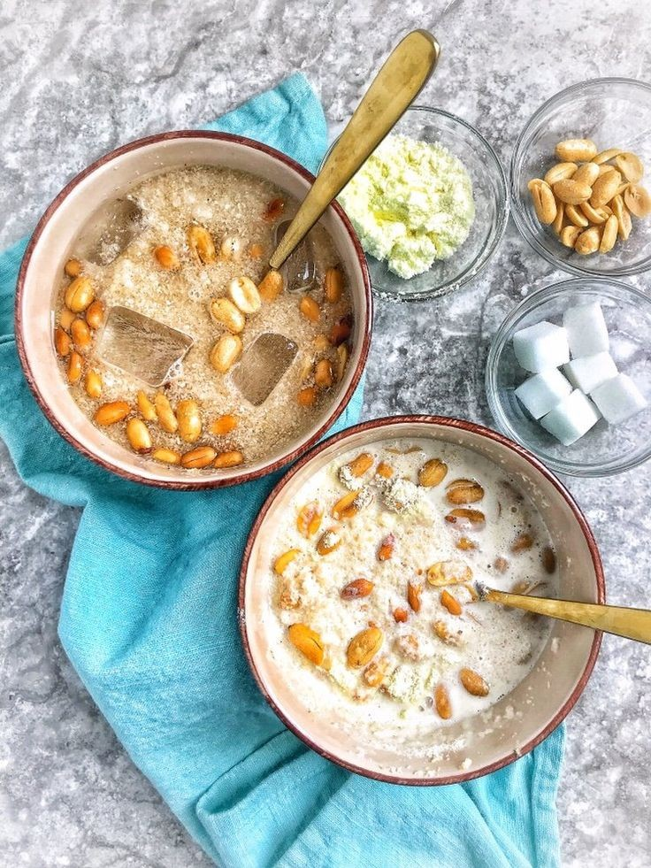

|  | THE GARRI MEN ASSOCIATION[GMA].GMA Is A Nigeria Associatoin Formed By Four Nigeria Men
GMA Abassador: Mrs Joy Talent |
GMA was founded in 2020 after the corona virus pandemic, by jahblex,david,belive and shadrack. these men worked for a company call multi pro limited. they worked there as promoters in the hypo deperment, and thet was how they came together and started GMA. and by the help of their supervisour [mrs joy talent] who at the time happends to be their brand ambassedor, supply's them with garri and it made them to think about GMA because the garri at the momment was a live saver to them [O.F.C.R]. By 2021 they wanted to make the whole world know that garri was a life saver.
orignally native to south america, cassava was introduced to west africa in the 16th century by portuguese colonizers. Garri garri became popular in nigeria in 19th century after formerly enslaved people began to return from portugal and introduced a method of processing cassava into garri.
So literally garri was not originated in nigeria, that makes it a world wide🌍 food, and is mostly consumed by nigerias.
Althouge garri is a starchy food, it is low in calories and with high fibre contents that will help you stay f ull for a longer period.
|
Traditional white garri. Yellow garri, and Ijebu garri. |
🔹🔹🔹 🔹🔹🔹🔹 🔹🔹🔹🔹🔹 |
Get your garri suger and milk [GSM]
Empty in a bwol add water and consume
If u have more like g/nut,honey, ice and many more.
In any sutuation don't forget to put milk
The aim of the GMA members is to make sure the whole world know everything about garri and the proper way to consume it.
So feel free to register and get a free membership card.